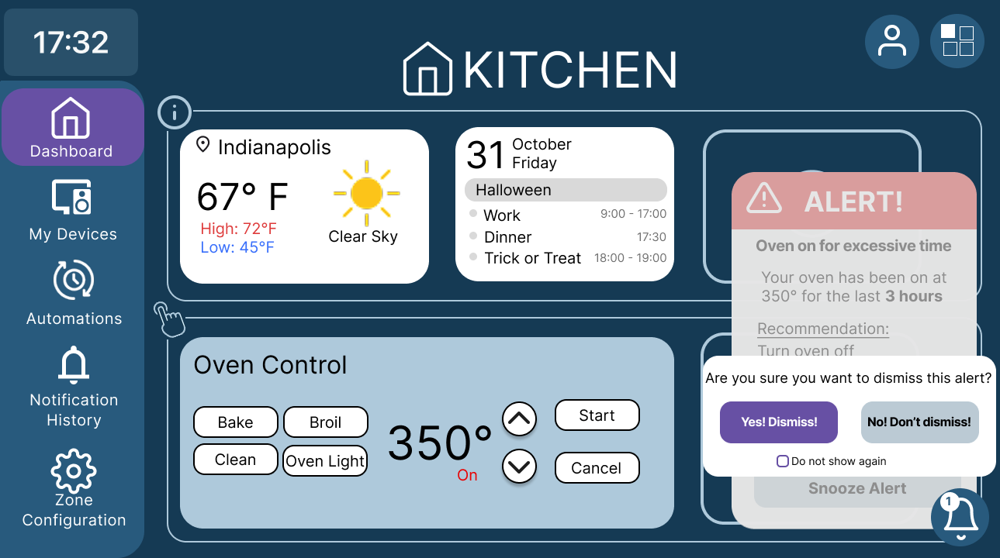
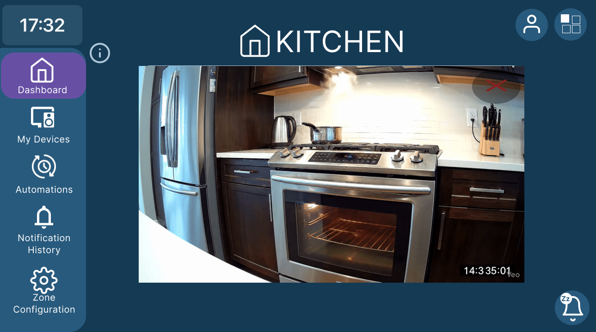
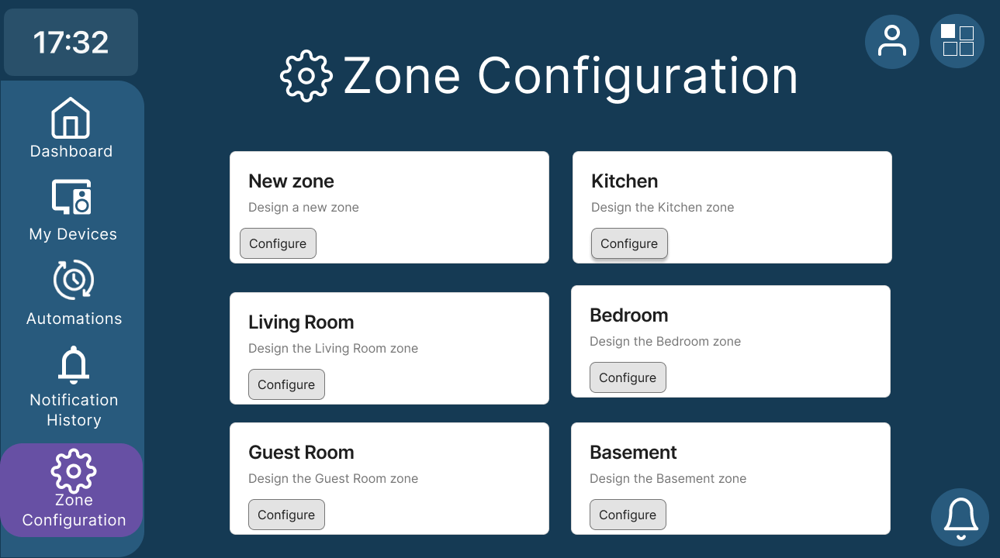
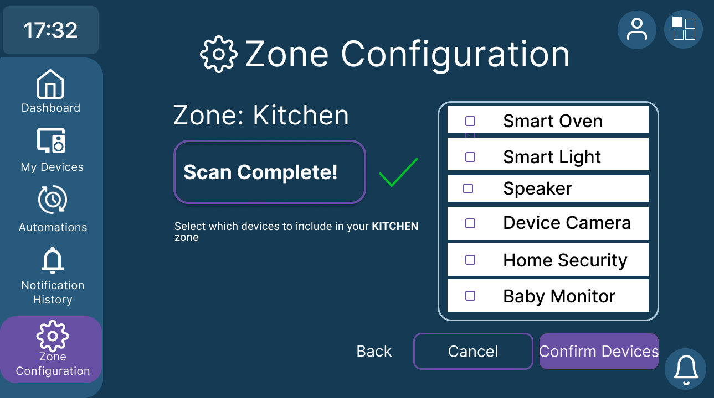
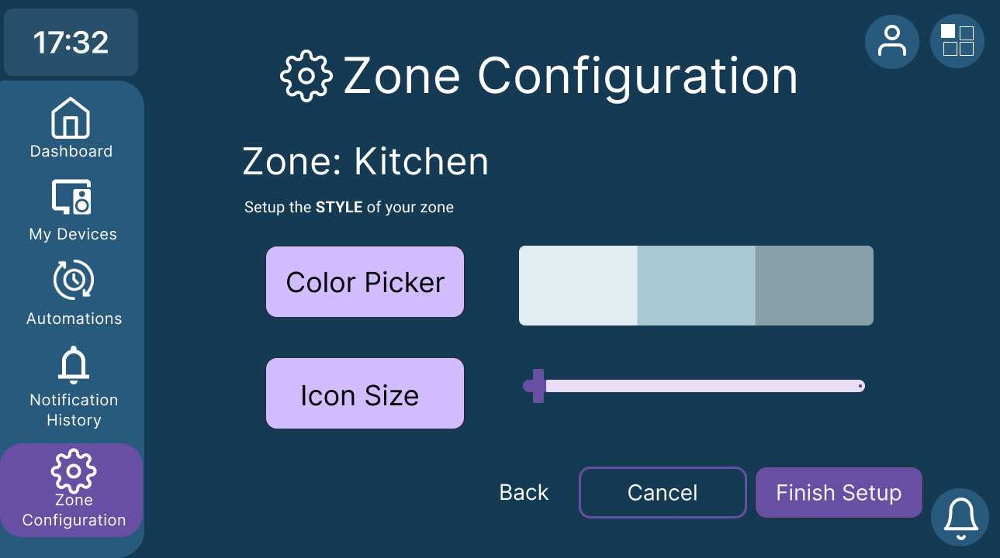

Families already own the gadgets. A kitchen display, a speaker, a camera, a phone that started as the remote for all of it.
← All work
Scenario 4 · Emerging Displays
Kitchen Hub
Homes fill with screens that do not talk to each other. Kitchen Hub is a zone display — weather, the day’s calendar, oven controls, and an alert when the oven has been on too long — so you are not hopping apps while dinner is on the stove.


Each device is a silo. Different apps, different labels, a guest who will not touch anything for fear of breaking it. The oven stays on because nobody wanted another popup.
One hub, one left rail, rooms as zones. Context-aware alerts that you can turn off, dismiss, or snooze — and a kitchen dashboard that still shows the weather underneath.
The problem
Scenario 4 asked for novel experiences with emerging displays. The brief was not a prettier thermostat. It was the gap between what a “smart home” promises and what a household actually does: a TV for watching, a speaker for listening, a kitchen panel for recipes, a phone as the manual integrator for all of it.
Becca Fehl, David Neish, and I framed the problem as agency. Homes are full of disconnected devices, each with its own setup, maintenance, privacy, and security. Parents shuffle calendars. Children argue over who has the remote. Guests avoid the display because it looks like it belongs to someone else. Literature we used in the problem space — Phan on compatibility, Chanda on the knowledge tax of a device pile, Saqib and Prange on bystander privacy and the fear of “breaking” a host’s setup — said the same thing our interviews later confirmed: people are not missing another gadget. They are missing one place that behaves the same in the kitchen as it does in the living room.
Usability goals we wrote down early stayed with the file: unified visibility, consistent patterns across rooms, less cognitive load, fewer app hops, safer defaults. Experience goals sat next to them. The display should feel like a household companion, not a second remote you have to remember.
What we heard
We interviewed three U.S. homeowners, all 26–35, all living with a partner, each of us facilitating one session. I interviewed User 1. Two of them already treated Alexa as a hub for lighting and security. The third barely used smart devices and mostly wanted Google Home for hands-free calling. None of them were actively anxious about privacy in the devices they already owned. All of them were inexperienced at troubleshooting. When something broke, they wanted a plain explanation, not a forum thread.
The wish underneath the gadgets was convenience with context. Switching devices currently meant manuals and extra interfaces. They wanted the system to notice time of day — lower the volume at night — and to cut clicks when their hands were already busy. They liked the control they had. They did not like being the glue.
“I feel like it could be helpful and sometimes people have a fear of leaving the oven on, so it can bring peace of mind.”
“Color and icon size page was confusing and non-intuitive. Didn’t understand what was a title and what was a button.”
“It has a familiar layout… I don’t think it would fit into my home, but maybe someone else’s.”
-
01
A zone is a room, not a settings folder.
Kitchen, living room, bedroom. The dashboard shows what that room needs. Configuration is a walkthrough, not a dump of every device in the house.
-
02
Alerts have to leave the weather visible.
Paper and sketch testers did not want popups to own the display. Turn off, dismiss, snooze — and a path back if you tapped the wrong one.
-
03
Guests and technicians are users too.
A visitor should not have to join Wi-Fi to share photos. An installer should not leave three remotes on the coffee table. Those personas kept the hub from becoming a homeowner-only toy.
-
04
Restrictions need a reason, not a dead slider.
Volume stops at 10. Testers understood why. Color chips that do not look clickable do not count as control.
What I owned
The product is the team’s. My slice was the structure and two of the people we designed for. I outlined the final problem statement, interviewed User 1, and wrote the Guest and Technician personas and scenarios — including the visit where sharing photos does not require joining the house Wi-Fi, and the install where three remotes is already a failure. I drew the information architecture, helped refine the product goals, and contributed to the user-flow diagrams. On paper I helped both sketch passes and wrote how the requirements showed up in the second iteration. In the hi-fi file I helped the home screen and the prototype interactions. Each of us ran one of the three usability sessions; I worked the analysis and insights after.
Becca held the dashboard, the left rail, and the alert popups, and she kept the visual system consistent. David originated zones on paper, built the zone-configuration flow and the live camera, and added the slider and scan micro-interactions.
The product
The in-home display is a kitchen first. A left rail holds Dashboard, My Devices, Automations, Notification History, and Zone Configuration, with the time sitting above it so the panel still reads as a room object. The kitchen view is weather in Indianapolis, Friday 31 October, Halloween, work until 17:00, dinner, trick-or-treat — and a large oven card at 350°, On, with Bake, Broil, Clean, and Oven Light. When the oven has been on too long, an alert lands on the right. Dismiss is not a silent tap. It asks if you are sure, and it lets you say you do not want that question again.


Configure a room, not a mesh
Zone Configuration is a grid: new zone, kitchen, living room, bedroom, guest room, basement. Select Kitchen, scan the network, choose which devices belong on this dashboard, then finish. The list in the prototype is Smart Oven, Smart Light, Speaker, Device Camera, Home Security, Baby Monitor. Testers understood the intent. Two of three still clicked the device name instead of the checkbox. That is a hit-target problem, not a comprehension problem.
Style is where the prototype went quiet
After devices, the kitchen asks for a color palette and an icon size. The screen is the one all three testers marked as difficulty. Titles looked like buttons. The slider looked like it might grow the whole tile, not the icon. We had labeled it a non-interactive stretch of the file and still watched people stall. Affordances failed before the feature did.

The oven alert is the product, not a toast
Amy is in the kitchen checking the evening calendar. The system notices the oven has been on longer than usual and asks if she wants it off. Turn off, dismiss, or snooze. Testers found weather and calendar with no issues. They turned the oven off from the notification. They dismissed without turning it off. They snoozed, found the bell, and came back. Volume would not go to 12 — it stops at 10 — and they could say why. Full-screen kitchen camera opened and closed. The alert did not block the weather. That was a requirement we wrote on purpose: popups should be casual enough to ignore.
A live feed without leaving the hub
David added the kitchen camera so a parent could glance at the room — or, in the write-up, a bedroom feed for a newborn — from the same interface as the oven. Collapse is a control, not a dead end. Testers did not find the full-screen transition obtrusive. One person still wanted a louder badge on the bell when something was snoozed.
Design decisions
-
01
One rail, every zone.
Dashboard, devices, automations, notification history, zone configuration. We cut content that made the system try to do too much. Navigability beat a flatter pile of features.
-
02
Information cards and action cards have to look different.
A sketch tester mixed up weather with oven control. The second pass put section boundaries and icons on the containers so glanceable facts and things you can press are not the same rectangle.
-
03
Snooze is a requirement, not a nicety.
The first sketches worried people about popup takeover. We added a queue and snooze before hi-fi. Usability still asked for a recently-dismissed trail so a guest does not think they broke the house.
How we got there
Problem space first, then interviews, then personas. I wrote Guest and Technician; David wrote Amy pulling into the driveway mid-call; the mother who wants a nursery feed while dinner is on; the gamer who cannot drop out of flow to cast. Requirements followed: multi-surface access, gesture or voice to place a display, plain-language repair, no projecting onto an oven, call handoff in seconds, consistent labels, visible restrictions, undo, unobtrusive updates, hardware that can live with the cabinets.
The IA started as a list of user goals and shrank. Completing a quick task, managing devices, setting automations, reviewing notifications, adjusting settings. The example flow is Amy shutting the bedroom lights; the system notices the front door is unlocked; she locks it from the alert or dismisses it. Yes and no both have to be reachable. That same shape became the oven alert in the kitchen.
Two sketch rounds. Large buttons, a left rail, kitchen as the default landing, a notification that does not demand a hunt. Feedback: widgets felt familiar; scan-for-devices needed a sentence of explanation; snooze got added. Hi-fi in Figma is still a class prototype — clickable enough to test Dashboard and Zone Configuration, not a shipped product.
-
Frame
Name the silos
Emerging displays, not another single-use kitchen panel. Families as the manual integrator.
-
Hear
Three homeowners
Alexa as a hub, Google Home for calling, and a shared wish for context without another manual.
-
Paper
Kitchen, then zones
Two sketch passes. Snooze, breadcrumbs, information versus action cards.
-
Test
Three sessions
Laptop in a kitchen, a dining table, a shared room. Style was the miss. The oven path held.
What we made
A hi-fi prototype of an in-home hub: a kitchen dashboard with weather, calendar, and oven control; an oven-on-too-long alert with turn off, dismiss, and snooze; zone cards; a device scan; a style step; a live kitchen camera. There is no live product. The Figma file is the artifact — and the interviews and the three usability sessions are why the file looks like this and not like another smart-home app grid.
The test was mostly clean. Weather, calendar, oven off, dismiss, snooze-and-return, zone navigation, scan, confirm, volume cap, camera: no issues for the people who ran them. Task 7 — color and icon size — was difficulty for all three. Users 1 and 3 clicked device names instead of checkboxes. User 2 looked in My Devices for zone settings. User 3 wanted a louder count on the bell. We would not ship the style screen without hover, borders, a preview, and a label that says what is selectable.
- Studio
- Scenario 4 · Fehl, Hope, Neish
- Interviews
- 3 homeowners
- Usability
- 3 task-based sessions
- Output
- IA, sketches, hi-fi proto
What I learned
A hub fails in the seams. We unified the oven and the weather and still created a small fork: notification versus dashboard card. Testers could use both. They should not have to wonder which one is “the” control after they choose. Guest anxiety is the same idea in another key. If dismissed alerts vanish, someone who does not live there thinks they broke the house.
The other lesson is signifiers. Volume that stops at 10 taught the restriction without a paragraph. Color chips without a hover taught nothing. I would rather ship fewer style options that look pressable than a palette that reads as decoration.
What I would do next is sit with a real kitchen for a Tuesday dinner. Two tasks: “The oven has been on too long — what do you do without abandoning the calendar?” and “Put the speaker and the camera on this zone.” I would make whole device rows clickable, preview style on the dashboard tile, and keep a recently-dismissed list so snooze is not a trap.